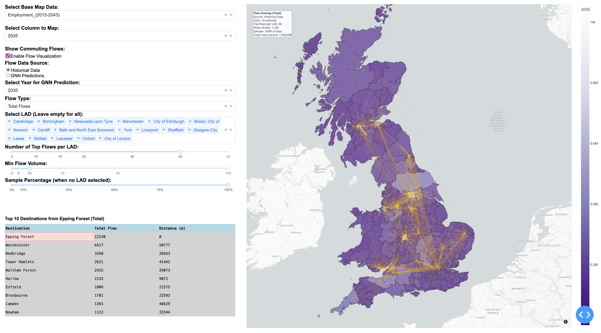

Urban resilience has become a central theme in addressing the challenges posed by climate change, rapid urbanization, and environmental changes. To support informed decision-making in this context, my research focuses on promoting the resilience and adaptability of urban transport systems in the face of climate change impacts. Utilizing an interdisciplinary approach, I will actively incorporate diverse data and methods and collaborate across disciplines to build a holistic understanding of transport resilience under climate change.
Key research questions explored in this theme include:
- How do individual travel behaviors change in response to disruptions from hydroclimate events?
- How can this be modeled effectively using agent-based simulation?
- What are the most effective adaptive transport adaptation strategies for mitigating the impacts of hydroclimate hazards on urban transport networks and services?
Relying on the open-source agent-based simulation framework, MATSim, this research will develop advanced simulations to evaluate the impacts of hydroclimate hazards on transport networks under various climate scenarios to support investment in resilient mobility systems. Global open data sources, such as OpenStreetMap (OSM) data, satellite data, together with demographic data in selected study areas will be applied to measure travel activities of commuters before and after natural disaster. This bottom-up modeling approach captures dynamic human travel behaviors and enables us to simulate the daily travel of thousands of individual “agents” on transportation networks.
We will utilize scenario planning techniques to explore adaptive transport management strategies, infrastructure retrofitting, and policy interventions to pre-disaster evacuation and post-disaster recovery. For example, the NASA's Black Marble VIIRS nightlight imagery, together with other socioeconomic and human behavior data, will be applied to estimate evacuation and recovery rates of human activities from historical natural hazards on the spatial-temporal scales. The outcomes will be evaluated using the average commute disruption, areas of the city cut off by flooding, or ridership changes in public transit to inform future transportation planning. I will further pair these simulations with economic impact analysis to understand costs of transport disruptions and benefits of adaptation. For instance, I will use value of time lost in congestion, freight delays, or recovery expenditures – to illustrate the return on investing in resilience. Moreover, by adopting input-output analysis, I will further quantify direct and indirect economic loss due to transport outages to support evidence-based planning and risk management.
